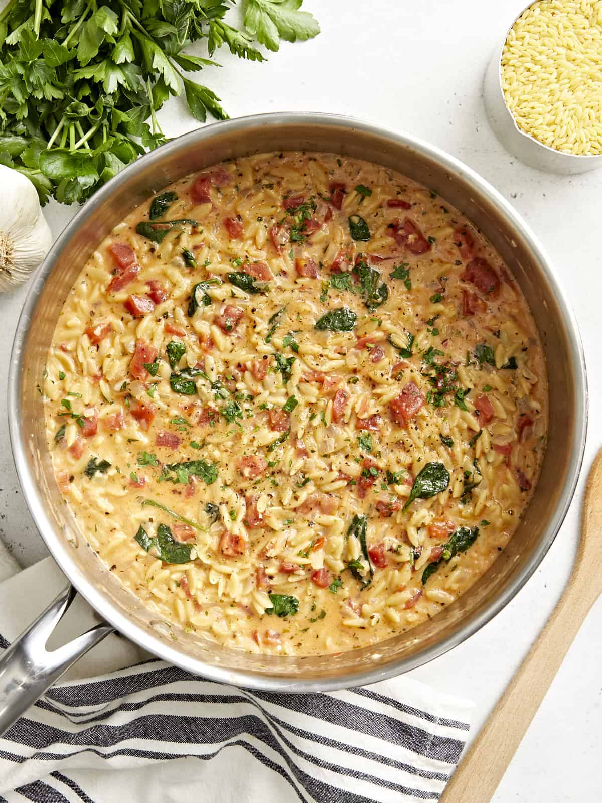

home
Tuscan Orzo
recipe source

Description
Okay, you’re really going to have to try not to judge a book by its cover here. I know this Lentil & Sausage Stew isn’t the prettiest thing to look at but, OMG, it will knock the socks right off your taste buds! No joke. We’re talking insanely delicious here… like “at the end of the week I’ll be sad that there isn’t any left” delicious. But worry not, it makes a huge batch so you can always stash a few servings in the freezer for later.
Ingredients
- 1 Tbsp olive oil
- 2 Tbsp butter
- 1/2 medium onion, chopped
- 4 cloves garlic, minced
- 1 tsp Italian seasoning
- 1 14.5oz. can roasted petite diced tomatoes
- 1 tsp lemon juice
- 1 tsp Dijon mustard
- 1 cup uncooked orzo pasta
- 1 1/2 cups vegetable broth
- 1/2 cup heavy cream, room temperature
- 1/2 cup shredded Parmesan
- 1 cup fresh baby spinach, packed
- 2 Tbsp minced fresh parsley
- Salt & pepper to taste
Instructions
- Add the oil, butter, and onion to a pot over medium-high heat. Sauté the onion for 3-4 minutes.
- Add the garlic, Italian seasoning, canned tomatoes, lemon juice, Dijon mustard, and orzo. Stir often, cooking for 3 minutes.
- Add the vegetable broth and room temperature cream. Once it starts to bubble, turn the heat down to medium-low and continue cooking for 10 minutes uncovered, stirring occasionally so the orzo doesn’t stick to the bottom of the pot. It should steadily simmer but not boil. You don’t want all of the liquid to evaporate.
- Take the pot off the heat and stir in the parmesan, spinach, and parsley. Stir again and cover the pot for a few minutes until it has thickened up to your liking.
- Season with salt and pepper to taste. Enjoy!